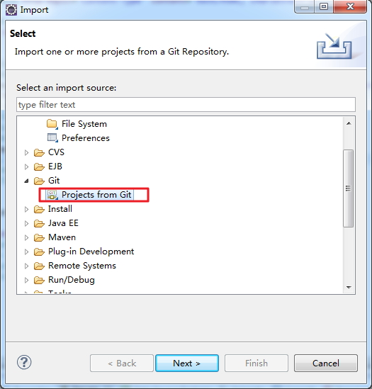
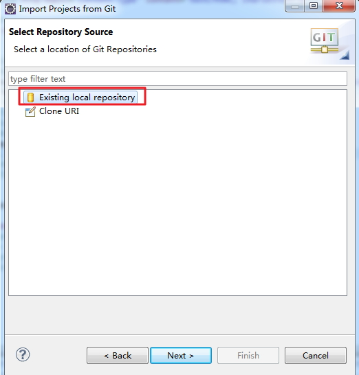
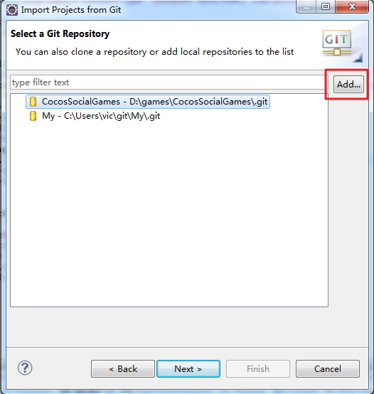
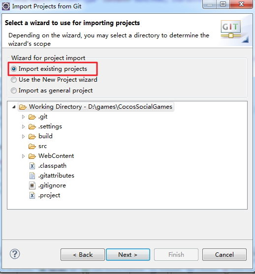

Import the project by Eclipse Git Guider


Click Add to find your git Repo

After importing the project, your eclipse may not recognize it as dynamic web project,
so right click the project, and click properties, and set the project like this.
then run by tomcat 6.
